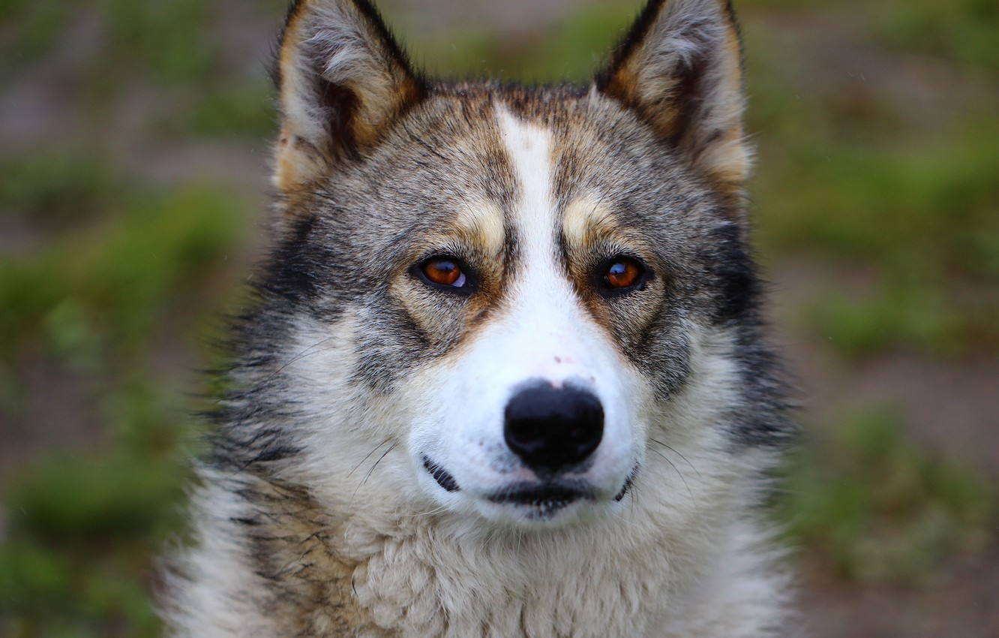

Внешность и рабочие качества
Прежде чем узнать, какие бывают собаки породы лайка, разберемся, как они выглядят.

К их общим чертам относятся:
- остроконечные, не висячие ушки (именно их взяли за основу в первоначальном названии животных)
- клиновидная форма головы;
- небольшие карие глаза миндалевидной формы;
- мощный и крепкий костяк;
- преимущественно средний размер тела (11-25 кг веса и около 55 см роста в холке);
- закрученный хвост-бублик, закинутый на спину;
- жесткая прямая шерсть без завитков с густым подшерстком, защищающим от низких температур.
- «Северные остроушки» примечательны крепким здоровьем, хорошим зрением, чутким слухом и развитым обонянием. На охоте они ведут себя максимально бесшумно, умело скрывая свое присутствие.